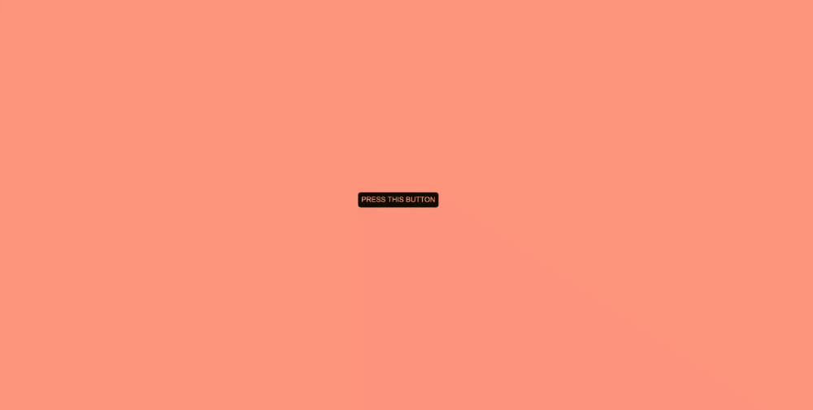
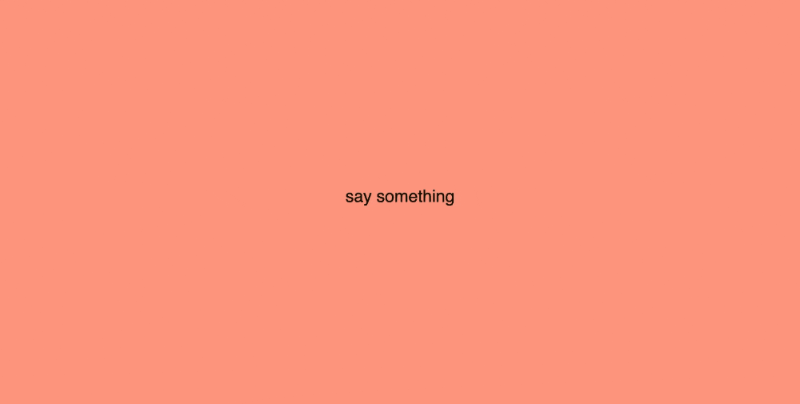
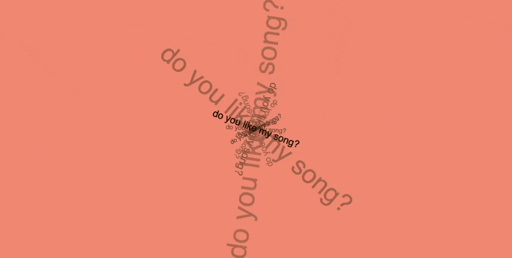

In Week 4, we visited the Yayoi Kusama exhibit at the National Gallery of Victoria. As one of my favourite artists, it was so inspiring to view her work on such a large scale and truly feel a part of her polka-dot universe. In experimenting with p5.js, her works became a point of exploration in creating iterative modes of geometric structures and expression. Here, I chose to recreate her famous polka-dot infinity rooms.

I then chose to explore this further with the integration of a preloaded image. This version slightly differs in frameRate, population, and size but ultimately aims to explore the same concept inspired by Kusama’s work.

Expanding upon this idea of the preLoad function, we began to experiment with the ways in which images can be incorporated as an interactive feature within code. This particular sketch uses the draw function for users to reveal the image underneath.

Week 5 began to integrate features such as the camera and microphone as a way of exploring more direct forms of interactivity. In this particular sketch, I enabled the capture function to record users as they drag their mouse over the page, allowing the integrated window to follow the cursor as it moves. The addition of a smaller frameRate creates a glitchy, nostalgic feel reminiscent of the early 2000s.

In Week 6, we began to explore communication between p5 and VS Code to develop sketches further. This particular sketch uses both p5.js and HTML to create an iterative display of buttons that randomly appear each time one is pressed by the user. The use of the spawn function facilitates the randomised placement of each button.

A return back to the ideas explored in week 4, preloaded images were used to execute the concept of ‘pointilism’: an interactive feature that involves the progression of circular dots to appear within the canvas, ultimately revealing the chosen image.

Week 6 saw an integration of interactive features such as speech recognition through the integration of the microphone feature. This sketch was a particularly challenging one for me to navigate, drawing upon multiple sources of code to achieve my desired outcome of accurately translating speech-to-text in real time. These sources include Karen Ann's Github archive as well as a p5 sketch by the artist 'ziyu'.

Exploring the preLoad function further, we began to import sound into p5 as a way of mapping text to its properties. This first sketch displays text size and rotation being mapped to the volume of the imported sound. The sound I imported is an original made on Logic Pro X a while ago. The code for this sketch was sourced directly from Karen Ann's github archive and modified to achieve my desired outcome.

As an extension of this in-class activity, I decided to integrate the camera feature in order to map the variable capture to the volume of the same sound. Using filter and opacity features allowed me to create a moody effect that I thought added a nice touch. Using the same bones of code as the previous sketch, I integrated additional lines to integrate the webcame feature as seemlessly as possible.

A non-interactive task during week 6 included the removal and display of every item within the bags we brought to class that day. In an attempt to organise each item into categorised groups, my group decided to display all of our combined items from ‘most likely to sell’ to ‘least likely to sell’. This panorama attempts to capture each item that we included within our display.